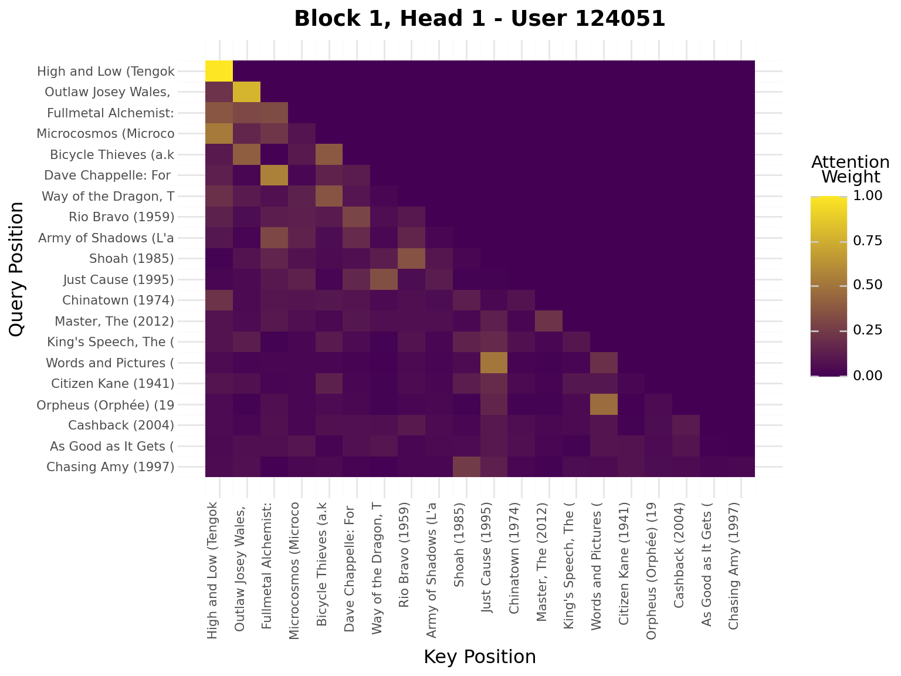
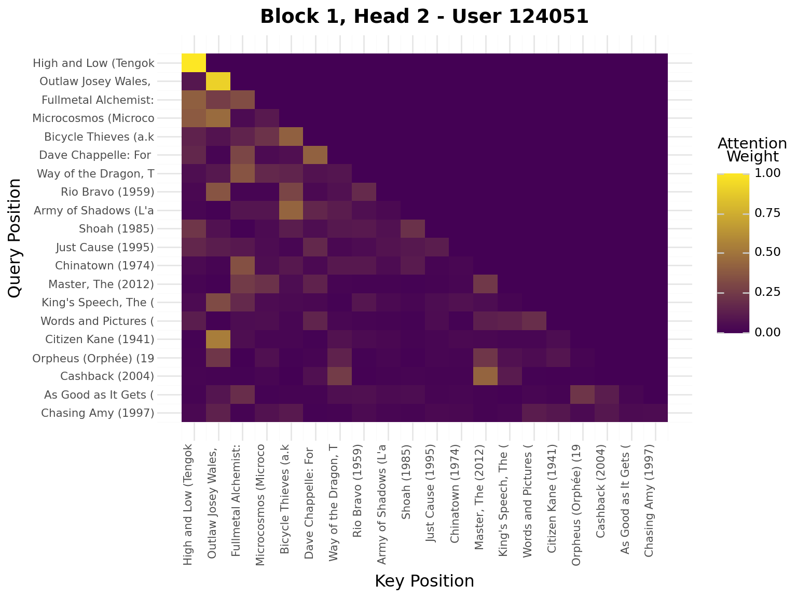
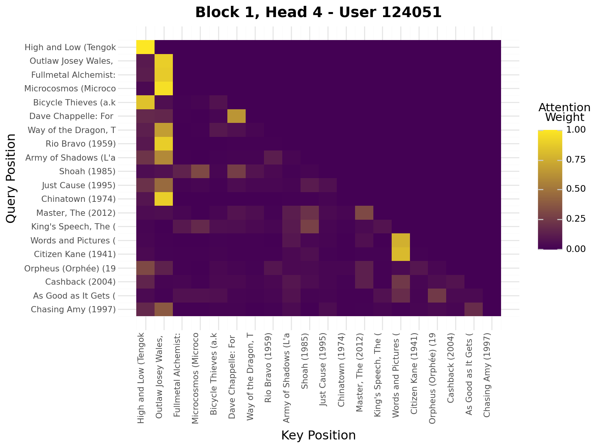
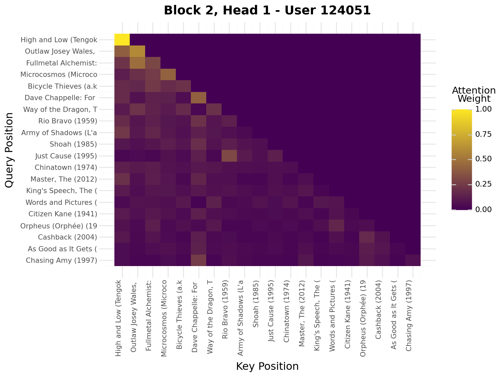
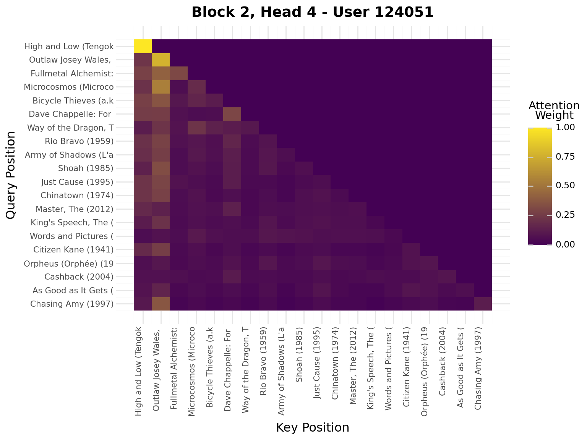
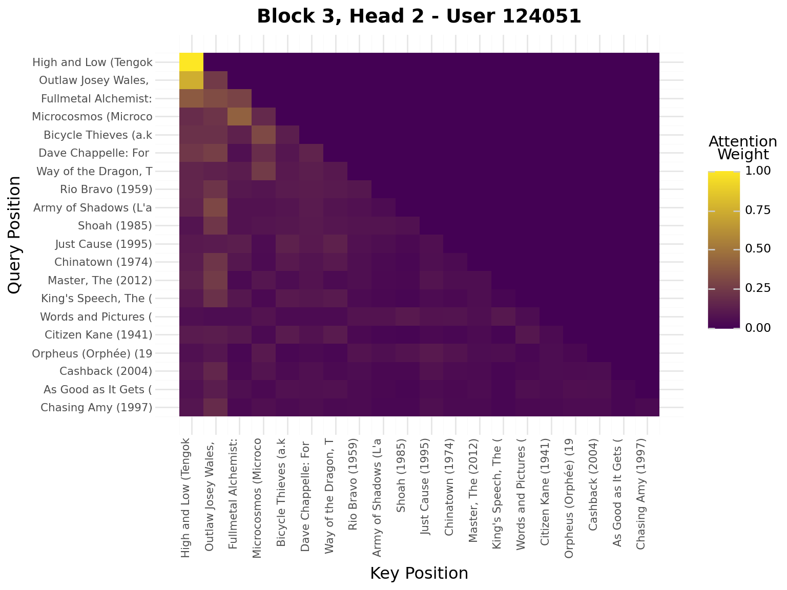
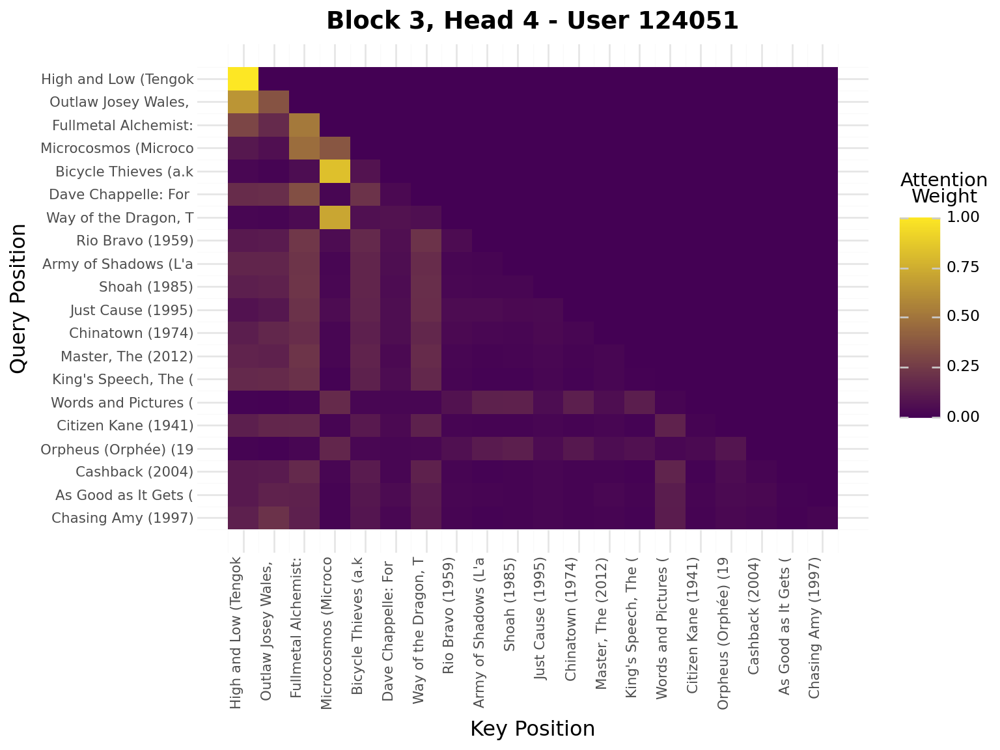

# Get sequences ordered by timestampsequences = get_user_sequences(filtered_ratings, max_len=settings.max_sequence_length, min_len=settings.min_sequence_length)example_user =list(sequences.keys())[0]sequence_stats =f"""**User Sequences:**- Number of sequences: {len(sequences)}- Example sequence (user {example_user}): {sequences[example_user][:10]}"""display(Markdown(sequence_stats))
# Map movie IDs to indices (0 is reserved for padding)all_items =set()for seq in sequences.values(): all_items.update(seq)item_to_idx = {item_id: idx +1for idx, item_id inenumerate(sorted(all_items))}idx_to_item = {idx: item_id for item_id, idx in item_to_idx.items()}idx_to_item[0] =0# Padding# Remap sequences to indicesindexed_sequences = { uid: [item_to_idx[item_id] for item_id in seq] for uid, seq in sequences.items()}vocab_stats =f"""**Item Vocabulary:**- Vocabulary size: {len(item_to_idx)} items"""display(Markdown(vocab_stats))
Item Vocabulary:
Vocabulary size: 37716 items
Train/Test Split
Show code
# Split sequences into train/test# Test: last item of each sequence# Train: all but last itemtrain_sequences = {}test_ground_truth = {}for uid, seq in indexed_sequences.items():iflen(seq) <2:continue train_sequences[uid] = seq[:-1] # All but last test_ground_truth[uid] = {seq[-1]} # Last itemsplit_stats =f"""**Train/Test Split:**- Train sequences: {len(train_sequences)}- Test sequences: {len(test_ground_truth)}"""display(Markdown(split_stats))
num_items =len(item_to_idx)model = SASRec( num_items=num_items, max_len=settings.max_sequence_length, num_blocks=settings.num_blocks, num_heads=settings.num_heads, hidden_size=settings.hidden_size, dropout=settings.dropout)model_stats =f"""**Model Architecture:**- Model parameters: {sum(p.numel() for p in model.parameters()):,}"""display(Markdown(model_stats))print(model)
Let’s see what SASRec recommends for a randomly sampled user!
Show code
# Sample a random user from active_users who has training sequencesavailable_users = [uid for uid in active_users if uid in train_sequences]sample_user_id = np.random.choice(available_users)sample_seq = train_sequences[sample_user_id]# Pad/truncate to max_leniflen(sample_seq) > settings.max_sequence_length: sample_seq = sample_seq[-settings.max_sequence_length:]else: sample_seq = [0] * (settings.max_sequence_length -len(sample_seq)) + sample_seq# Convert to tensorseq_tensor = torch.tensor([sample_seq], dtype=torch.long).to(device)# Predicttop_items, top_scores = model.predict_next(seq_tensor, k=10)# Map back to movie IDsrecommendations = [idx_to_item[idx.item()] for idx in top_items[0]]# Displaydisplay(Markdown(f"**User {sample_user_id}'s Recent History:**"))recent_items = [idx_to_item[idx] for idx in sample_seq[-5:] if idx >0]recent_movies = movies.filter(pl.col("movie_id").is_in(recent_items))display(recent_movies.select(["title", "genres"]))display(Markdown(f"**SASRec Recommendations for User {sample_user_id}:**"))rec_movies = movies.filter(pl.col("movie_id").is_in(recommendations))display(rec_movies.select(["title", "genres"]))
Recall@10 measures: “What fraction of relevant items appear in top-10?”
NDCG@10 measures: “How well are relevant items ranked?” (position-aware)
Note
These metrics are typically lower than MF/EASE on very sparse data, but SASRec excels when: - Users have rich interaction histories - Temporal patterns matter - Short-term intent dominates
Analyze Attention Patterns
Let’s visualize what the model learned!
Sample User’s Movie Sequence
First, let’s look at the viewing history of a randomly sampled user.
Show code
from recsys_genai.notebook_utils import tmdb_images# Sample a random user for attention visualizationviz_user_id = np.random.choice(available_users)viz_seq = train_sequences[viz_user_id]# Load posters datasetposters_raw = pl.read_parquet("../data/shared/posters.parquet")# Join to get movie info with posters (via links for tmdb_id)viz_movie_ids = [idx_to_item[idx] for idx in viz_seq if idx >0]viz_movies = ( pl.DataFrame({"movie_id": viz_movie_ids}) .join(movies, on="movie_id", maintain_order="left") .join(links.select(["movie_id", "tmdb_id"]), on="movie_id", maintain_order="left") .join(posters_raw, on="tmdb_id", maintain_order="left"))# Display user sequence infodisplay( Markdown(f"""**Sampled User ID:** {viz_user_id}**Sequence Length:** {len(viz_seq)} items**Unique Movies:** {len(viz_movie_ids)} (excluding padding)"""))recent_movies = viz_movies.tail(20)# Display posters for movies that have themposter_paths = [p for p in recent_movies["poster_path"].to_list() if p isnotNone]display(Markdown(f"\n**Movie Posters:**"))display(tmdb_images(poster_paths))
Sampled User ID: 124051
Sequence Length: 49 items
Unique Movies: 49 (excluding padding)
Movie Posters:
Extract Attention Weights
Now let’s extract attention weights from the model for this user’s sequence.
Show code
iflen(viz_seq) >20: viz_seq = viz_seq[-20:] # Use last 20 for visualizationseq_padded = [0] * (20-len(viz_seq)) + viz_seqseq_tensor = torch.tensor([seq_padded], dtype=torch.long).to(device)model.eval()with torch.no_grad(): _, attn_weights_list = model.forward_with_attention(seq_tensor)# Get movie titles for labelsmovie_ids = [idx_to_item[idx] for idx in seq_padded]valid_ids = [mid for mid in movie_ids if mid >0]if valid_ids: movie_titles = movies.filter(pl.col("movie_id").is_in(valid_ids)) title_map = {row["movie_id"]: row["title"][:20] for row in movie_titles.to_dicts()} labels = [title_map.get(mid, "PAD") for mid in movie_ids]else: labels = ["PAD"if mid ==0elsestr(mid) for mid in movie_ids]# Plot attention weights from all blocks and all headsfor block_idx, block_attn inenumerate(attn_weights_list):# block_attn shape: (batch_size, num_heads, seq_len, seq_len) num_heads = block_attn.shape[1] display(Markdown(f"---\n## Block {block_idx +1}\n---"))for head_idx inrange(num_heads): attn_matrix = block_attn[0, head_idx].cpu().numpy() # First sample, specific head# Prepare data for plotnine attn_data = []for i inrange(attn_matrix.shape[0]):for j inrange(attn_matrix.shape[1]): attn_data.append({"query_pos": i, "key_pos": j, "attention": attn_matrix[i, j]}) attn_df = pl.DataFrame(attn_data)# Create heatmap with plotnine plot = ( ggplot(attn_df, aes(x="key_pos", y="query_pos", fill="attention"))+ geom_tile()+ scale_fill_gradient(low="#440154", high="#FDE724", name="Attention\nWeight")+ scale_x_continuous(breaks=list(range(20)), labels=labels)+ scale_y_reverse(breaks=list(range(20)), labels=labels)+ labs( title=f"Block {block_idx +1}, Head {head_idx +1} - User {viz_user_id}", x="Key Position", y="Query Position", )+ theme( axis_text_x=element_text(rotation=90, hjust=1, size=8), axis_text_y=element_text(size=8), ) ) display(plot)







Interpretation:
Brighter cells = stronger attention
Each row shows what a query position attends to
Causal mask enforces no future peeking
Key Takeaways
SASRec models temporal dynamics - Order matters!
Self-attention learns which past items are relevant for prediction
Causal masking ensures no future leakage during training
Connection to LLMs: SASRec uses the same transformer architecture as GPT!
GPT predicts next word
SASRec predicts next item
Both use causal self-attention
References
Kang, W.-C., & McAuley, J. (2018). Self-attentive sequential recommendation. 2018 IEEE International Conference on Data Mining (ICDM), 197–206. https://doi.org/10.1109/ICDM.2018.00035